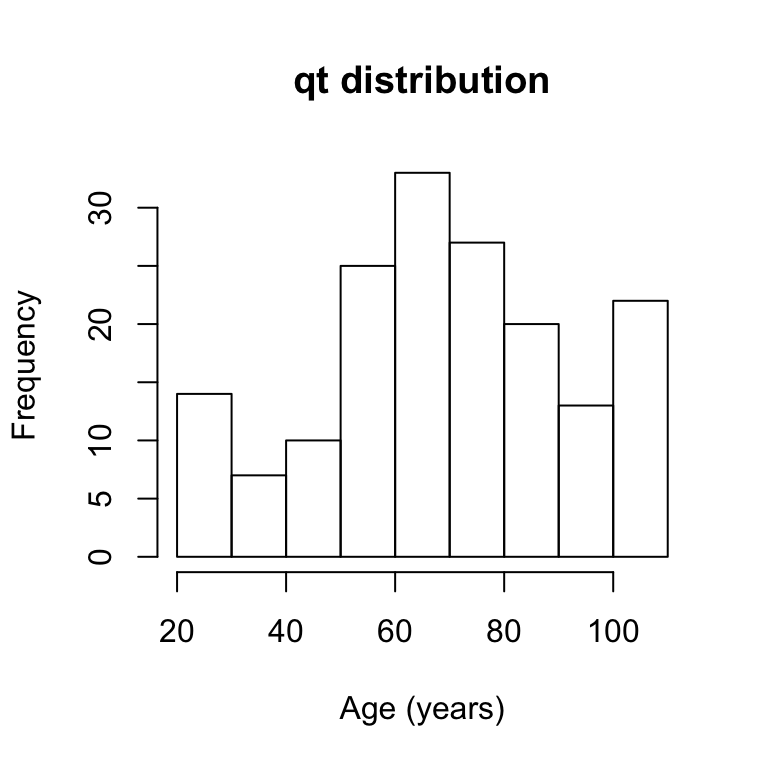
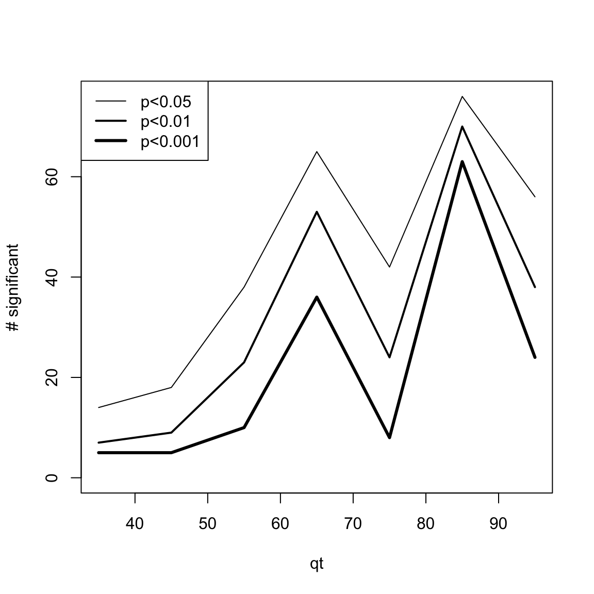
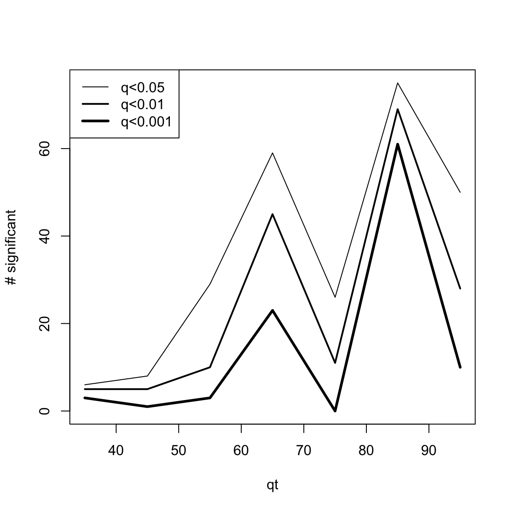
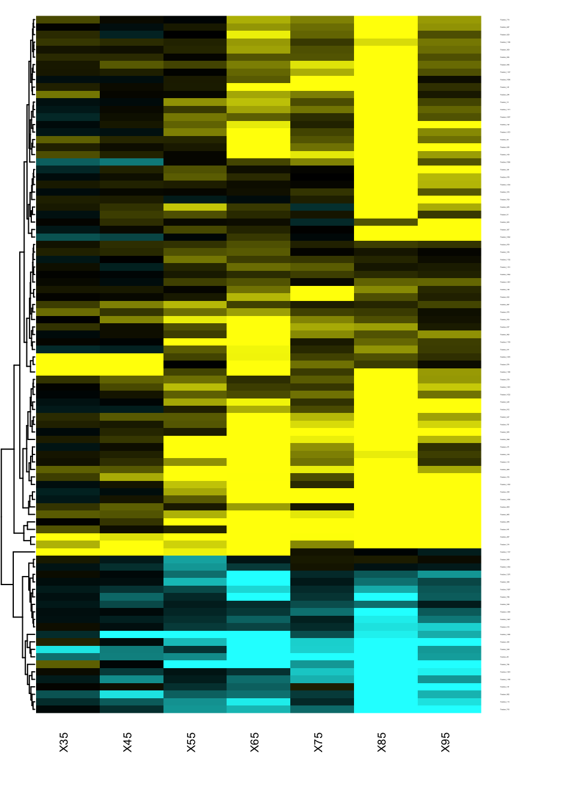

DEswan.RmdThis 1st version of the DEswan vignette briefly describes how to use this package to analyze the links between a quantitative trait (qt) and high dimensional datasets such as -omics data. Here we apply DEswan to the data generated by Lehallier et al. (https://www.biorxiv.org/content/10.1101/751115v1).
# library(devtools)
# devtools::install_github("lehallib/DEswan",build_vignettes = T)This aging proteomic dataset was generated using SOMAscan. Lehallier et al. measured 1305 plasma proteins from 171 individuals ranged from young adults to centenarians from 4 different cohorts.
# devtools::install("../DEswan")
library("DEswan")
head(agingplasmaproteome[,1:5])
#> Age Sex Cohort Feature_1 Feature_2
#> 1 107 Female PRIN09 3.249 2.850
#> 2 105 Male PRIN09 3.105 2.801
#> 3 106 Female PRIN09 3.149 2.841
#> 4 106 Male PRIN09 3.205 2.876
#> 5 105 Male PRIN09 3.159 2.961
#> 6 105 Male PRIN09 3.337 2.860The first three column are demographics and samples’ characteristics. Columns 4:1308 are levels of plasma proteins in a log10 scale.
Age is the qt of interest and Sex and Cohort are covariates we want to include in the analysis
# distribution of qt
hist(agingplasmaproteome[,1],main="qt distribution",xlab="Age (years)")
# covariates
table(agingplasmaproteome[,2])
#>
#> Female Male
#> 87 84
table(agingplasmaproteome[,3])
#>
#> GEHA PRIN06 PRIN09 Seattle
#> 26 51 24 70
To run DEswan we call the function DEswan(). DEswan() takes 5 arguments (3 are optional):
⋅⋅* data.df: a data Frame - columns are variables and rows are samples (same order as qt and covariates)
⋅⋅* qt: a Vector - quantitative trait for DE-SWAN (same order as data.df and covariates)
⋅⋅* window.center: an optional Vector - window centers. Default is quantile(qt, probs = seq(.1,.9,.1))
⋅⋅* buckets.size: an optional Numeric - size of each bucket. Default is set to (max(range(qt))-min(range(qt)))/2
⋅⋅* covariates: a data Frame. Columns are variables and rows are samples (same order as qt and covariates)
x=cor(agingplasmaproteome[,1],agingplasmaproteome[,-c(1:3)])
head(agingplasmaproteome[,1:5])
#> Age Sex Cohort Feature_1 Feature_2
#> 1 107 Female PRIN09 3.249 2.850
#> 2 105 Male PRIN09 3.105 2.801
#> 3 106 Female PRIN09 3.149 2.841
#> 4 106 Male PRIN09 3.205 2.876
#> 5 105 Male PRIN09 3.159 2.961
#> 6 105 Male PRIN09 3.337 2.860
start_time <- Sys.time()
# res.DEswan=DEswan(data.df = agingplasmaproteome[,-c(1:3)],
res.DEswan=DEswan(data.df = agingplasmaproteome[,3+c(which(colnames(x) %in% colnames(x)[abs(x)>.5]))],
qt = agingplasmaproteome[,1],
window.center = seq(35,95,10),
buckets.size = 20,
covariates = agingplasmaproteome[,c(2:3)])
#> [1] "window.center 1/7"
#> [1] "window.center 2/7"
#> [1] "window.center 3/7"
#> [1] "window.center 4/7"
#> [1] "window.center 5/7"
#> [1] "window.center 6/7"
#> [1] "window.center 7/7"
end_time <- Sys.time()
end_time-start_time
#> Time difference of 5.328683 secsThe output of is a list of 2 data.frames: p = pvalues of qT and covariates for each variable and each window.center coefficients = coefficients of qT and covariates for each variable and each window.center
head(res.DEswan$p)
#> variable window.center factor pvalue
#> 1 Feature_19 35 qt 0.5982000400
#> 2 Feature_19 35 Sex 0.5392278397
#> 3 Feature_19 35 Cohort 0.9942942114
#> 4 Feature_54 35 qt 0.0457508523
#> 5 Feature_54 35 Sex 0.0001776826
#> 6 Feature_54 35 Cohort 0.0331861758
head(res.DEswan$coeff)
#> variable window.center factor
#> (Intercept) Feature_19 35 (Intercept)
#> qt.tmp1 Feature_19 35 qt
#> covariates$SexMale Feature_19 35 SexMale
#> covariates$CohortSeattle Feature_19 35 CohortSeattle
#> (Intercept)1 Feature_54 35 (Intercept)
#> qt.tmp11 Feature_54 35 qt
#> coefficient
#> (Intercept) 3.6228803069
#> qt.tmp1 -0.0194542199
#> covariates$SexMale 0.0218608696
#> covariates$CohortSeattle 0.0004792839
#> (Intercept)1 3.6366547315
#> qt.tmp11 0.0434974425Increasing the resolution of DEswan (more values in “window.center” vector) will provide more detailed results but will require additional computational time. Computational time also depends on the number of features included in the analysis.
Next releases of DEswan will focus on decreasing computational time.
DEswan outputs are in long format. Reshaping the results to wide format helps the exploration of the statistics produces by DEswan
res.DEswan.wide.p=reshape.DEswan(res.DEswan,parameter = 1,factor = "qt")
head(res.DEswan.wide.p[,1:5])
#> variable X35 X45 X55 X65
#> 1 Feature_100 0.07590300 0.29734451 0.86476347 2.929219e-04
#> 2 Feature_1032 0.87131724 0.48797672 0.04809311 8.216263e-02
#> 3 Feature_1056 0.44283629 0.47567400 0.05464477 5.982463e-05
#> 4 Feature_1058 0.62735503 0.64697045 0.39293953 5.509108e-02
#> 5 Feature_1062 0.06621829 0.09694809 0.86923229 1.476878e-01
#> 6 Feature_1064 0.93689325 0.87715881 0.41877198 2.094534e-01Methods for dealing with multiple testing frequently call for adjusting α in some way. The Bonferroni correction is one simple way to take this into account; adjusting the false discovery rate using the Benjamini-Hochberg procedure is a more powerful method.
res.DEswan.wide.q=q.DEswan(res.DEswan.wide.p,method="BH")
head(res.DEswan.wide.q[,1:5])
#> variable X35 X45 X55 X65
#> 1 Feature_100 0.3715252 0.5867818 0.9178181 0.0010896693
#> 2 Feature_1032 0.9568731 0.7439645 0.1177016 0.1076214765
#> 3 Feature_1056 0.7487959 0.7439645 0.1209991 0.0003272759
#> 4 Feature_1058 0.8174135 0.8232951 0.4834008 0.0764697147
#> 5 Feature_1062 0.3421278 0.3467759 0.9178181 0.1716870179
#> 6 Feature_1064 0.9568731 0.8964370 0.4914348 0.2318948642One simple way to visualize DEswan results is to count the number of significant variables for each window.center tested.
# head(res.DEswan.wide.p[,1:5])
res.DEswan.wide.p.signif=nsignif.DEswan(res.DEswan.wide.p)
toPlot=res.DEswan.wide.p.signif[1:3,]
x=as.numeric(gsub("X","",colnames(toPlot)))
plot(1, type = "n", xlim=c(min(x,na.rm=T),max(x,na.rm=T)),ylim=c(0,max(toPlot,na.rm=T)),ylab="# significant",xlab="qt")
for(i in 1:nrow(toPlot)){
lines(x,
toPlot[i,],type='l',lwd=i)
}
legend("topleft",legend = paste("p<",rownames(toPlot),sep=""),lwd=c(1,2,3))
# head(res.DEswan.wide.q[,1:5])
res.DEswan.wide.q.signif=nsignif.DEswan(res.DEswan.wide.q)
toPlot=res.DEswan.wide.q.signif[1:3,]
x=as.numeric(gsub("X","",colnames(toPlot)))
plot(1, type = "n", xlim=c(min(x,na.rm=T),max(x,na.rm=T)),ylim=c(0,max(toPlot,na.rm=T)),ylab="# significant",xlab="qt")
for(i in 1:nrow(toPlot)){
lines(x,
toPlot[i,],type='l',lwd=i)
}
legend("topleft",legend = paste("q<",rownames(toPlot),sep=""),lwd=c(1,2,3))
The best way to identify when and how the features are changing in the qt space is to generate a heatmap of the signed effects.
res.DEswan.wide.coeff=reshape.DEswan(res.DEswan,parameter = 2,factor = "qt")
toHeatmap=sign(res.DEswan.wide.coeff[,-1])*-log10(res.DEswan.wide.p[,-1])
rownames(toHeatmap)<-res.DEswan.wide.coeff$variable
pairs.breaks <- seq(-3, 3, by=0.01)
mycol <- gplots::colorpanel(n=length(pairs.breaks)-1,low="cyan",mid="black",high="yellow")
# display the colorbar
# image(z = matrix(1:100, ncol = 1),col = mycol,xaxt = "n",yaxt = "n")
gplots::heatmap.2(as.matrix(toHeatmap),
cexRow=.1,cexCol=.7,
trace="none",
dendrogram="row",
breaks=pairs.breaks,
col=mycol,
Rowv=T,key=F,
Colv=F,
lhei=c(0.2,10),
lwid=c(.2,3)
)
Similar analysis can be generated for each covariates. Here we show how sex affect the plasma proteome during aging
res.DEswan.wide.p.covar1=reshape.DEswan(res.DEswan,parameter = 1,factor = "Sex")
res.DEswan.wide.coeff.covar1=reshape.DEswan(res.DEswan,parameter = 2,factor = "SexMale")
toHeatmap=sign(res.DEswan.wide.coeff[,-1])*-log10(res.DEswan.wide.p[,-1])
rownames(toHeatmap)<-res.DEswan.wide.coeff$variable
pairs.breaks <- seq(-3, 3, by=0.01)
mycol <- gplots::colorpanel(n=length(pairs.breaks)-1,low="cyan",mid="black",high="yellow")
# display the colorbar
# image(z = matrix(1:100, ncol = 1),col = mycol,xaxt = "n",yaxt = "n")
gplots::heatmap.2(as.matrix(toHeatmap),
cexRow=.1,cexCol=.7,
trace="none",
dendrogram="both",
breaks=pairs.breaks,
col=mycol,
Rowv=T,key=F,
Colv=F,
lhei=c(0.2,10),
lwid=c(.2,3)
)
#> Warning in gplots::heatmap.2(as.matrix(toHeatmap), cexRow = 0.1, cexCol
#> = 0.7, : Discrepancy: Colv is FALSE, while dendrogram is `both'. Omitting
#> column dendogram.